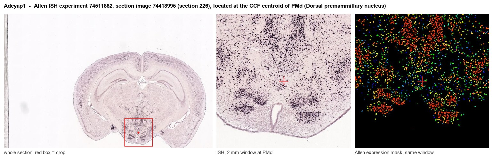

Adcyap1
Spatial tier: RESTRICTED · Class: OTHER · Top region: PMd (Dorsal premammillary nucleus) · Positive regions: 26/554
43.7Discovery Score
42.4Targetability Score
CEvidence grade C
What this means: Adcyap1: fine CCF profile is restricted toward PMd (top regions: PMd, TMd, MMm, MMp, MMl; 26 positive regions); direct spatial validation is still required.
Function in PMd: evidence, prediction, innovation
- Gene function
- Adcyap1 encodes PACAP, a VIP/secretin-family neuropeptide cleaved into PACAP-38 and PACAP-27. It signals mainly through the Gs-coupled PAC1 receptor (Adcyap1r1), plus VPAC1/VPAC2, raising cAMP and driving PKA/CREB. It is a canonical stress- and threat-responsive peptide co-expressed in glutamatergic neurons.
- Region function
- The dorsal premammillary nucleus (PMd) is the hypothalamic hub for predator and social threat: it is strongly Fos-activated by predator exposure and drives escape and flight through its projection to dorsolateral periaqueductal gray.
- Published in this region
- expression only No region-specific literature found for PACAP manipulation inside PMd. PMd function itself is well characterised - Wang et al. 2021 (eLife) showed PMd-Cck neurons projecting to dlPAG set escape vigor to innate and conditioned threats, Wang et al. 2021 (Neuron) linked PMd to flight-versus-navigation coordination, and Torossian et al. 2025 showed PMd control of learned flight. The nearest PACAP results are in neighbouring nuclei: Ross et al. 2018 (PMv PACAP and reproduction) and Velasco et al. 2022 (VMH PACAP-PAC1R and fear extinction).
- Predicted function
- Prediction: PACAP is a co-transmitter of glutamatergic PMd threat neurons providing sustained, cAMP-mediated amplification of the PMd-dlPAG escape signal - the slow component that keeps defensive arousal elevated after the predator is gone. Conditional Adcyap1 deletion in PMd, or PAC1 blockade in dlPAG with PACAP6-38, should leave initial escape intact but reduce escape vigor and shorten persistent post-threat avoidance; PMd-Adcyap1 chemogenetic activation should evoke flight and stress-axis activation.
- Innovation
- ★★★☆☆ 3/5 PMd threat circuitry is intensively studied and PACAP is a mainstream stress peptide, so only the specific PACAP-in-PMd test is missing.
- Tools
- Adcyap1-2A-Cre and Adcyap1-IRES-Cre driver lines; Adcyap1 floxed and Adcyap1-null mice; Adcyap1r1 (PAC1) floxed; PAC1 antagonist PACAP6-38 and agonist maxadilan; PACAP-38 peptide; PACAP antisera. For the nucleus itself: Cck-Cre and Nos1-Cre PMd drivers, AAV-DIO-hM3Dq/hM4Di and retro-Cre dlPAG targeting.
- References
Direct evidence located at the region

Allen ISH experiment 74511882, section image 74418995 (section 226): the section that contains the CCF centroid of Dorsal premammillary nucleus according to the Allen image-to-atlas alignment (reference_to_image), with a 2 mm window around that point. Left: whole section, red box = window. Middle: ISH signal. Right: Allen's expression-mask view of the same window. open this image in the Allen viewer
Look it up yourself: Allen Mouse Brain ISH for Adcyap1Allen reference atlas: PMd (structure 980)ABC Atlas MERFISH viewer(in the ABC Atlas choose dataset MERFISH-C57BL6J-638850-CCF, colour cells by gene "Adcyap1" or by parcellation_substructure "PMd")All genes confined to PMd + 3-D brain
Direct spatial evidence
MERFISH REGION LOCATOR

Regional expression figure

Predicted WMB × fine-CCF profile; not direct full-transcriptome spatial measurement.
Spatial profile
Evidence and specificity
- Evidence status
- PREDICTED_FINE
- Direct sources
- None; predicted localization only
- Exclusive threshold
- 12 positive regions out of 554
- Spatial specificity
- 0.304
- Top-region fraction
- 0.051
- Filter status
- PASS
Interpretation limits
- Cell-type-to-region projection is imputed expression, not direct spatial measurement.
- Adult reference atlases do not establish stability across age, sex, strain, state, or disease.
- Transcript abundance does not guarantee protein abundance or genetic-tool performance.